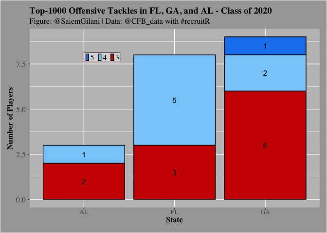

A college football recruiting package
recruitR is an R package for working with college sports recruiting data. It is an R API wrapper around collegefootballdata’s recruiting and roster endpoints.
Note: For details on the data sources, please go the website linked above. Sometimes there are inconsistencies in the underlying data itself. Please report issues here or to https://collegefootballdata.com/.
Installation
You can install the released version of recruitR from GitHub with:
# You can install using the pacman package using the following code:
if (!requireNamespace('pacman', quietly = TRUE)){
install.packages('pacman')
}
pacman::p_load_current_gh("saiemgilani/recruitR")
# if you would prefer devtools installation
if (!requireNamespace('devtools', quietly = TRUE)){
install.packages('devtools')
}
# Alternatively, using the devtools package:
devtools::install_github(repo = "saiemgilani/recruitR")Offensive Tackle Example
Let’s say that we are interested in seeing how many offensive tackles in the 2020 recruiting cycle were:
- located in Florida
- located in the states bordering Florida
- ranked inside the top 1000
FL_OTs <- cfbd_recruiting_player(2020, recruit_type = 'HighSchool', state='FL', position ='OT')
GA_OTs <- cfbd_recruiting_player(2020, recruit_type = 'HighSchool', state='GA', position ='OT')
AL_OTs <- cfbd_recruiting_player(2020, recruit_type = 'HighSchool', state='AL', position ='OT')
SE_OTs <- dplyr::bind_rows(FL_OTs, GA_OTs, AL_OTs)
SE_OTs_1k <- SE_OTs %>%
dplyr::filter(ranking < 1000) %>%
dplyr::arrange(ranking)
SE_OTs_1k %>%
dplyr::select(ranking, name, school, committed_to, position,
height, weight, stars, rating, city, state_province)
#> ranking name school committed_to
#> 1 11 Broderick Jones Lithonia Georgia
#> 2 38 Tate Ratledge Darlington School Georgia
#> 3 74 Myles Hinton Greater Atlanta Christian School Stanford
#> 4 110 Marcus Dumervil St. Thomas Aquinas LSU
#> 5 128 Jalen Rivers Oakleaf Miami
#> 6 157 Issiah Walker Jr. Norland Florida
#> 7 271 Joshua Braun Suwannee Florida
#> 8 318 Connor McLaughlin Jesuit Stanford
#> 9 333 Javion Cohen Central Alabama
#> 10 491 Cayden Baker Fort Myers North Carolina
#> 11 530 Austin Blaske South Effingham Georgia
#> 12 538 Michael Rankins Lennard Georgia Tech
#> 13 562 Jordan Williams Gainesville Georgia Tech
#> 14 577 Brady Ward St. Paul's Episcopal Ole Miss
#> 15 614 Trey Zimmerman Roswell North Carolina
#> 16 658 Gerald Mincey Cardinal Gibbons Florida
#> 17 752 Jake Wray Marietta Colorado
#> 18 934 Joshua Jones Central Kentucky
#> 19 953 Wing Green Lee County Georgia Tech
#> 20 971 Kobe McAllister Heritage Cincinnati
#> position height weight stars rating city state_province
#> 1 OT 77.0 298 5 0.9947 Lithonia GA
#> 2 OT 78.0 322 4 0.9821 Rome GA
#> 3 OT 78.0 308 4 0.9662 Norcross GA
#> 4 OT 77.0 305 4 0.9515 Fort Lauderdale FL
#> 5 OT 78.0 331 4 0.9425 Orange Park FL
#> 6 OT 76.0 309 4 0.9308 Miami FL
#> 7 OT 78.0 335 4 0.9049 Live Oak FL
#> 8 OT 79.0 260 4 0.8968 Tampa FL
#> 9 OT 77.0 295 4 0.8951 Phenix City AL
#> 10 OT 78.0 260 3 0.8789 Fort Myers FL
#> 11 OT 77.0 278 3 0.8759 Guyton GA
#> 12 OT 77.0 295 3 0.8755 Ruskin FL
#> 13 OT 78.0 310 3 0.8742 Gainesville GA
#> 14 OT 79.0 310 3 0.8729 Mobile AL
#> 15 OT 78.0 294 3 0.8709 Roswell GA
#> 16 OT 77.0 320 3 0.8681 Fort Lauderdale FL
#> 17 OT 77.0 300 3 0.8643 Marietta GA
#> 18 OT 76.5 304 3 0.8559 Phenix City AL
#> 19 OT 79.0 285 3 0.8552 Leesburg GA
#> 20 OT 78.0 275 3 0.8551 Ringgold GAPlotting the Offensive Tackles by State
You can also create a plot:
SE_OTs_1k$stars <- factor(SE_OTs_1k$stars,levels = c(5,4,3,2))
SE_OTs_1k_grp <- SE_OTs_1k %>%
dplyr::group_by(state_province, stars) %>%
dplyr::summarize(players = n()) %>%
dplyr::ungroup()
ggplot(SE_OTs_1k_grp ,aes(x = state_province, y = players, fill = factor(stars))) +
geom_bar(stat = "identity",colour='black') +
xlab("State") + ylab("Number of Players") +
labs(title="Top-1000 Offensive Tackles in FL, GA, and AL - Class of 2020",
subtitle="Figure: @SaiemGilani | Data: @CFB_data with #recruitR")+
geom_text(aes(label = players),size = 4, position = position_stack(vjust = 0.5))+
scale_fill_manual(values=c("dodgerblue2","lightskyblue","red3","ghostwhite"))+
theme(legend.title = element_blank(),
legend.text = element_text(size = 12, margin=margin(t=0.2,r=0,b=0.2,l=-1.2,unit=c("mm")),
family = "serif"),
legend.background = element_rect(fill = "grey85"),
legend.key.width = unit(.2,"cm"),
legend.key.size = unit(.3,"cm"),
legend.position = c(0.25, 0.84),
legend.margin=margin(t = 0.4,b = 0.4,l=-1.2,r=0.4,unit=c('mm')),
legend.direction = "horizontal",
legend.box.background = element_rect(colour = "#500f1b"),
axis.title.x = element_text(size = 12, margin = margin(0,0,1,0,unit=c("mm")),
family = "serif",face="bold"),
axis.text.x = element_text(size = 10, margin=margin(0,0,1,0,unit=c("mm")),
family = "serif"),
axis.title.y = element_text(size = 12, margin = margin(0,0,0,0,unit=c("mm")),
family = "serif",face="bold"),
axis.text.y = element_text(size = 12, margin = margin(1,1,1,1,unit=c("mm")),
family = "serif"),
plot.title = element_text(size = 14, margin = margin(t=0,r=0,b=1.5,l=0,unit=c("mm")),
lineheight=-0.5, family = "serif",face="bold"),
plot.subtitle = element_text(size = 12, margin = margin(t=0,r=0,b=2,l=0,unit=c("mm")),
lineheight=-0.5, family = "serif"),
plot.caption = element_text(size = 12, margin=margin(t=0,r=0,b=0,l=0,unit=c("mm")),
lineheight=-0.5, family = "serif"),
strip.text = element_text(size = 10, family = "serif",face="bold"),
panel.background = element_rect(fill = "grey75"),
plot.background = element_rect(fill = "grey65"),
plot.margin=unit(c(top=0.4,right=0.4,bottom=0.4,left=0.4),"cm"))